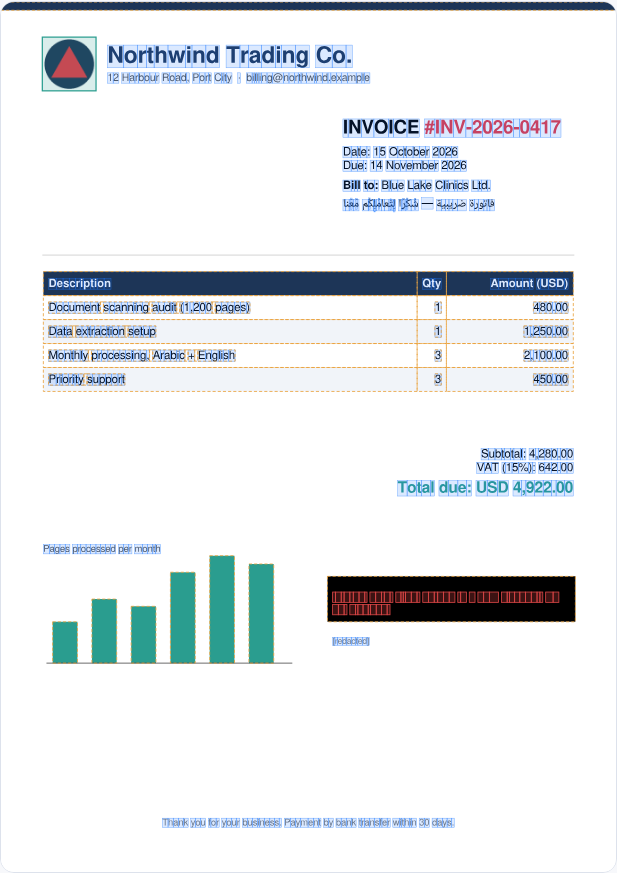
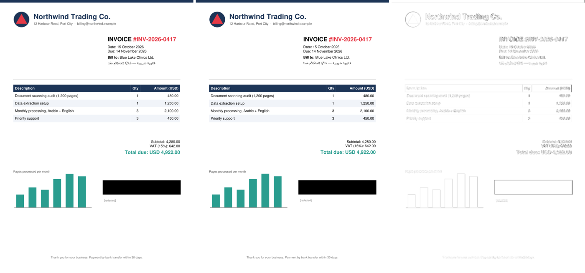

Most PDFs already contain every word, number and colour as exact data. pdf-not-pixels reads that data directly, so nothing is guessed. You get text, layout, colours and even hidden text, with no OCR, no AI and no per-page fees.
Finance and accounts payable, legal and compliance, publishers and education, AI teams building search or chat over documents, archives and data teams.
Every team is feeding documents to AI. Exact input text means fewer wrong answers and no OCR bill for files that never needed OCR.
Scanned paper has no instructions to read. For scans you still need OCR, and the built-in triage tells you exactly which pages those are.
Think of a cake. OCR looks at a photo of the cake and guesses the recipe. pdf-not-pixels opens the recipe book, because for most PDFs it is right there inside the file.
Inside a PDF, a page looks like this:
The page below is not an image. Your browser draws it from the data that pdf-not-pixels extracted from this PDF invoice. Click any character to inspect it, X-ray the page, or find out what the black box is hiding.
Click any character on the page.
Full data: page-1.json · the same page as plain SVG: page-1.svg
List prices of popular cloud document services, from each vendor's official pricing page (checked October 2026). Move the sliders to your own volume. Triage first: pay for OCR only on the pages that really are scans.
Scans have no text inside; they still need OCR. Everything else is read exactly, for free.
"Triage + OCR on scans only" uses the cheapest OCR line above for the scanned share. Compute for pdf-not-pixels itself: 1 million pages ≈ 163 CPU-core hours (measured at 1.7 pages per second per core), on hardware you already have. Volume discounts and free tiers are not included. Sources: AWS Textract · Google Document AI · Azure Document Intelligence · Mistral OCR · LlamaParse.
💼 Accounts payable
"As a finance lead, I want invoice totals read exactly from supplier PDFs, so that no payment is ever based on a misread digit."
⚖️ Legal and compliance
"As a compliance officer, I want every outgoing PDF checked for hidden text under black boxes, so that a bad redaction never leaks a client's secret."
🤖 AI and search teams
"As an AI engineer, I want clean text with layout from thousands of PDFs, so that our chatbot answers from the real words, without an OCR bill."
📚 Publishers and education
"As a publisher, I want books turned into accessible, searchable data with every Arabic or Hebrew diacritic intact, so that readers and screen readers get the exact text."
🗄️ Archives and data teams
"As a data manager, I want to know which of our 2 million PDFs are real scans, so that we send only those to OCR and save the rest of the budget."
🎨 Design and localisation
"As a designer, I want to rebuild a page as editable SVG, so that I can recolour, restyle or translate it without starting from scratch."
🧪 Quality assurance
"As a QA engineer, I want two versions of a report compared character by character, so that I know exactly what changed."
♿ Accessibility
"As an accessibility lead, I want the true reading order of every page, including right-to-left text, so that screen readers read it in the right order."
🏛️ Government and records
"As a records officer, I want documents processed on our own servers, so that sensitive files never go to a cloud service."
Sort pages: real text, image-only (a scan), or words turned into shapes. Only scans need OCR.
List every glyph, shape and image the page draws, in drawing order, with exact positions and colours.
Take each glyph's outline from the fonts embedded in the file, so the page can be redrawn exactly.
Redraw the page from the data alone and compare it with the original, pixel by pixel.
Reading order, right-to-left scripts, accents attached to the right letter, spaces, hidden text.
Some files name a letter wrongly. The shape never lies: fix it once per font, for the whole document.
Four commands do it all:
| Document | What is in it | Result |
|---|---|---|
| Demo invoice (this page) | English + Arabic with diacritics, table, logo, chart, a "redacted" note | Rebuilt at 0.9968 similarity · all text exact · hidden note found |
| Sample report | English + Arabic, colours, vector chart, image, text under a box | Rebuilt at 0.9985 · hidden sentence found |
| 19-page research paper (LaTeX) | Classic PostScript fonts, maths, figures, a rotated margin stamp | Every page rebuilt from its own glyph outlines · 0.976–0.997 |
| Speed | The 19-page paper, 46,644 glyphs | 1.7 pages/s on one CPU core |


Use the right tool for each page. The triage step tells you which pages are which.
A page that is one big picture has no instructions to read. Use OCR, and only for those pages.
Some design tools convert headings into vector shapes. They look like text but contain no letters.
Soft shadows and feathering (transparency effects) are not redrawn yet. Pages with them look a little darker when rebuilt, but their text is unaffected.
Five short levels. Each has a 1-minute lesson and a quick quiz with instant explanations. Finish all five and you will understand PDF data better than most interview candidates.
No. OCR looks at a picture and guesses letters. This reads the letters that are already stored in the file, the same ones your PDF viewer uses to draw the page.
No. Every result comes from the file itself, so the same file always gives the same data. You can feed the exact text to an AI afterwards, and it will answer from the real words.
No. It runs on your own machine or server. There is no cloud service and no per-page fee.
Any PDF made by software: Word, Excel, Google Docs, InDesign, LaTeX, browsers, billing and reporting systems. Scanned paper needs OCR; the triage tool finds those pages for you.
Yes. Text comes out in reading order, with each diacritic attached to the right letter. The demo invoice above includes an Arabic line.
That happens: some files say a glyph is one letter when it is another. The glyph sheet tool draws every glyph next to its claimed letter, you correct it once per font, and the fix applies to the whole document.
Yes. It is MIT licensed: use it, change it and sell products built on it. Keep the license notice.
Every page can be rebuilt from the extracted data and compared with the original. The score shows how close they are, and a side-by-side image shows where they differ.